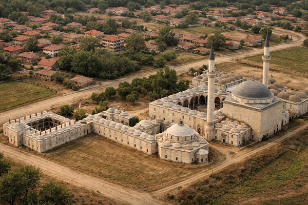
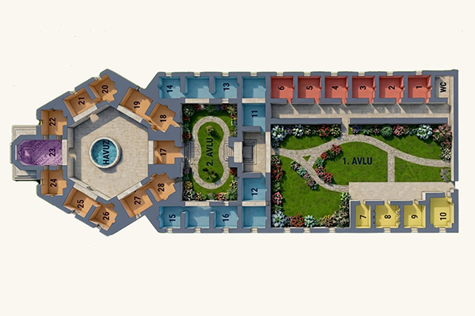

Edirne Sultan II. Bayezid Darüşşifası, 1488 yılında Osmanlı’nın sağlık, bilim ve sosyal devlet anlayışını bir araya getiren en önemli yapılardan biri olarak inşa edilmiştir. Bu yapı yalnızca bir hastane değil; beden, ruh ve zihni birlikte ele alan bütüncül tıbbın öncüsüdür.

Görsel 1: Külliyenin Dış Görünüşü ve Genel Planı
Darüşşifa, II. Bayezid tarafından 1484 yılında temeli atılan ve 1488’de hizmete açılan büyük külliyenin bir parçasıdır. Osmanlı’da darüşşifalar; Şifahane, Bimarhane ve Darülafiye isimleriyle de anılmıştır.
| Özellik | Bilgi |
|---|---|
| Kuruluş Yılı | 1488 |
| Kurucu | Sultan II. Bayezid |
| Mimarı | Mimar Hayrettin |
| Hizmet Süresi | Yaklaşık 400 Yıl |
| Sistem | Vakıf Sistemi |
| Günümüzdeki Durumu | Sağlık Müzesi |

Görsel 2: Külliye Yerleşim Planı
Merkezi Plan Sistemi: Darüşşifa, dünyanın en erken merkezi planlı hastanelerinden biri olarak kabul edilir. Yapının temel özellikleri şunlardır:
| Bölüm | Mimari Özellik |
|---|---|
| Ana Kubbe | Sekizgen Plan |
| Hasta Odaları | 8 Kışlık + 8 Yazlık |
| Şadırvan | Merkezi Konum |
| Pencereler | İç ve Dış Yönlü |
| Avlu | Açık Hava Tedavisi Alanı |
Akustik ve Ses Sistemi: Kubbe yapısı sayesinde su sesi yankılanır ve müzik tüm odalara eşit şekilde yayılır. Bu sistem, modern akustik mimarinin erken dönem örneklerindendir.

Görsel 3: 3D Oda Yerleşimi ve Üstten Görünüm
Su Terapisi: Merkezdeki şadırvanın ürettiği sürekli su sesi, hastaların stresini azaltarak huzur verici bir ortam sağlar.
Bahçe ve Şifa Bitkileri: Bahçede yetiştirilen Yasemin, Gül, Şebboy, Reyhan ve Sümbül gibi bitkiler hem görsel hem de kokusal terapi amacıyla kullanılmıştır.

Görsel 4: Merkez Şadırvan ve Bahçe Görünümü
Musiki Tedavisi: Haftada 3 gün konser veren 10 kişilik müzik heyeti, hastalığa göre belirli makamları icra ederdi:

Görsel 5: Müzisyenler ve Enstrümanlar Canlandırması
| Görev | Sayı | Uzmanlık Alanı |
|---|---|---|
| Baştabib | 1 | En Yetkin Hekim |
| Tabib | 2 | Genel Tedavi |
| Kehhâl | 2 | Göz Hastalıkları |
| Cerrâh | 2 | Cerrahi Müdahale |
| Eczacı | 2 | İlaç Üretimi |
| Müzisyen | 10 | Terapi ve İcra |
Beslenme ve Meşguliyet: Hastalara keklik ve sülün gibi değerli etlerden oluşan özel diyetler sunulurdu. Ayrıca hastaların zihnini olumsuz düşüncelerden uzaklaştırmak için sepet örme gibi el işi faaliyetleri yaptırılırdı.
1652 yılında burayı ziyaret eden Evliya Çelebi, yapıyı "dil ile tarif edilmez" olarak nitelendirmiş ve şu detayları aktarmıştır:

Görsel 6: Evliya Çelebi Canlandırması veya Yazma Eser Görseli
Haftada 2 gün açılan eczanede binlerce çeşit ilaç halka ücretsiz dağıtılırdı. Ancak bu hizmetin suistimal edilmemesi için darüşşifa kapısında şu ibretlik vakıf uyarısı yer alırdı:
1914 yılında hizmetine son verilen bu kurum, günümüzde bir Sağlık Müzesi olarak varlığını sürdürmektedir. Avrupa'ya model olan bu yapı, modern hastaneciliğin öncüsü sayılmaktadır.
"Bu yapı, hastalığı değil insanı tedavi eden bir medeniyetin eseridir."